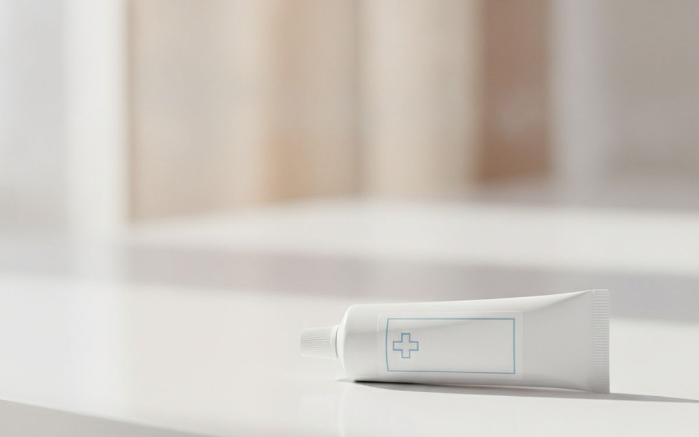
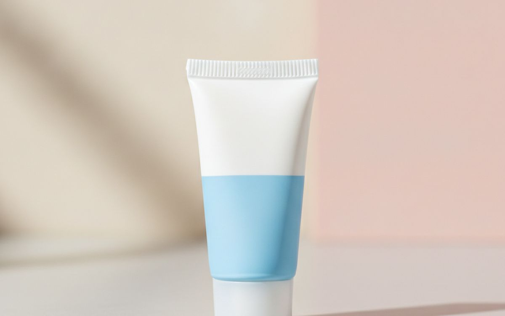
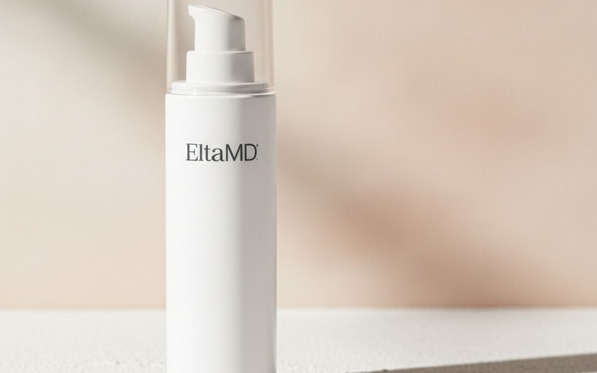
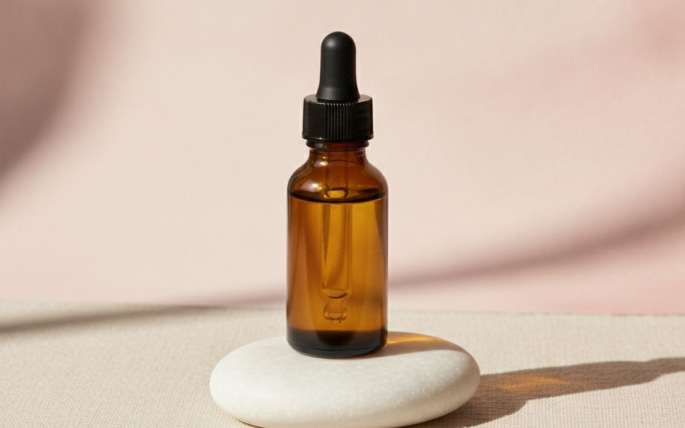
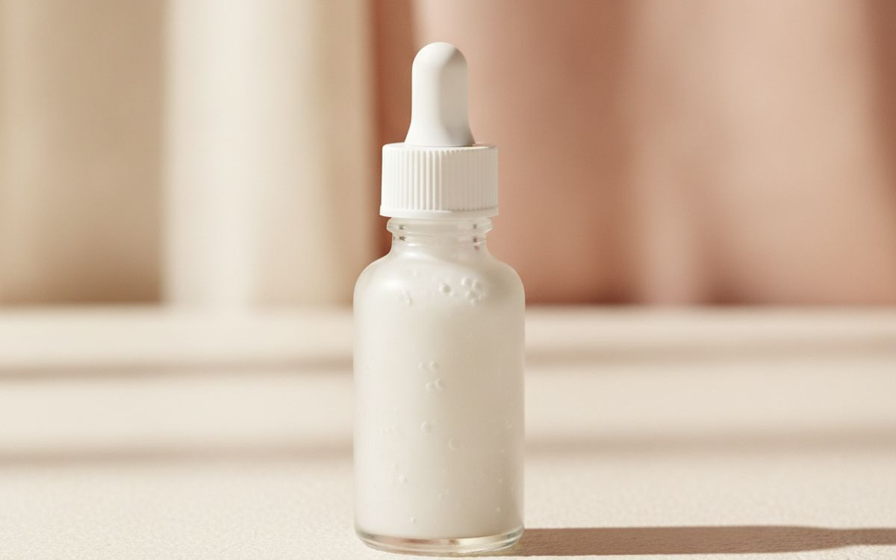
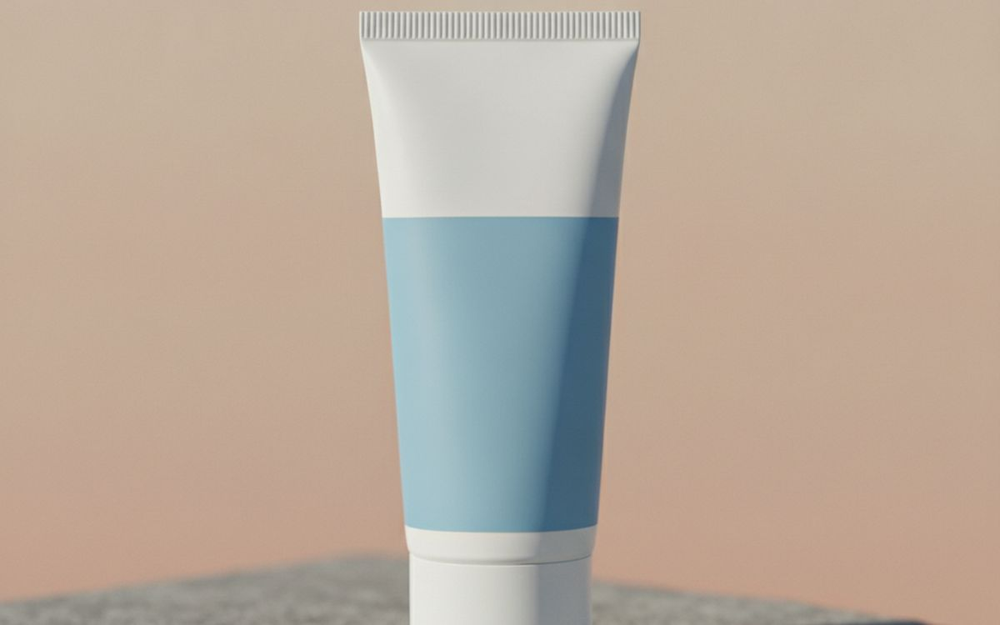
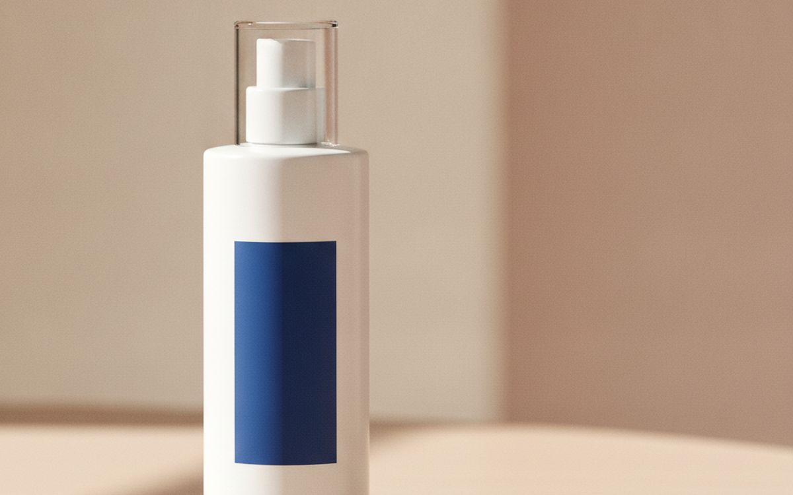
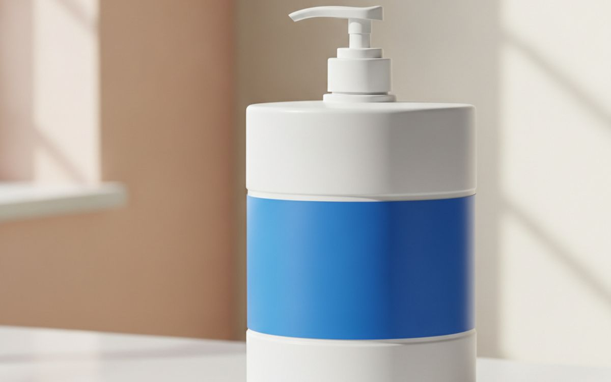
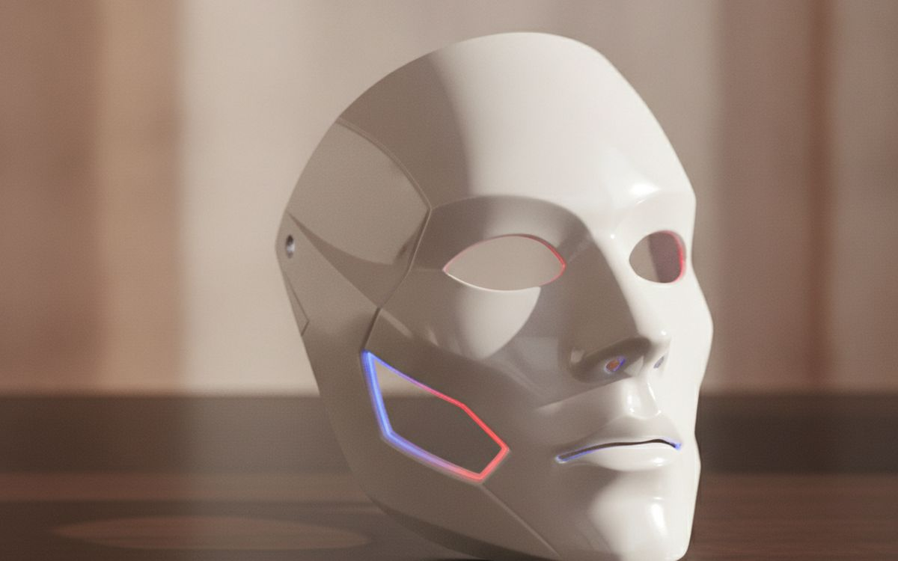
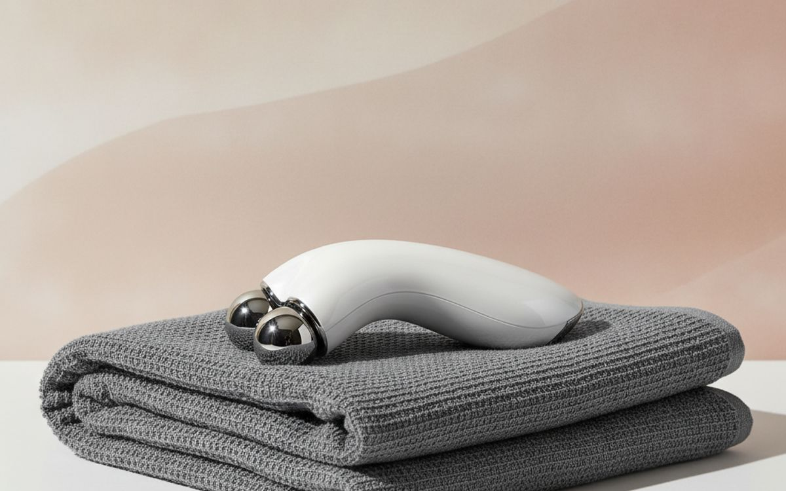

Τα περισσότερα προϊόντα περιποίησης είναι ακριβές κρέμες που κάνουν ελάχιστα. Εδώ είναι τα συστατικά και οι απλές ρουτίνες που κάνουν πραγματική διαφορά.
Πολλοί άνθρωποι θέλουν να βελτιώσουν την επιδερμίδα τους. Η βιομηχανία ομορφιάς προσφέρει μια ατελείωτη ροή νέων προϊόντων, καθένα από τα οποία υπόσχεται αξιοσημείωτα αποτελέσματα. Είναι εύκολο να νιώσει κανείς χαμένος από τον απλό αριθμό των ορών, κρεμών και συσκευών που είναι διαθέσιμες. Τα περισσότερα από αυτά τα αντικείμενα είναι ακριβά, και οι ισχυρισμοί τους συχνά στερούνται ουσιαστικής επιστημονικής βάσης. Οι καταναλωτές ενθαρρύνονται να πιστεύουν ότι πολύπλοκες ρουτίνες με πολλά βήματα είναι απαραίτητες, αλλά αυτό σπάνια συμβαίνει. Η κατανόηση λίγων βασικών συστατικών και του τι μπορούν ρεαλιστικά να επιτύχουν είναι πολύ πιο αποτελεσματική από το να κυνηγάς κάθε νέα τάση.
Η συντριπτική πλειοψηφία των προϊόντων περιποίησης λειτουργεί απλώς ως ενυδατικά, προσφέροντας προσωρινή ενυδάτωση. Ενώ η ενυδάτωση είναι σημαντική, δεν αλλάζει σημαντικά την υποκείμενη δομή ή την εμφάνιση του δέρματος. Οι πραγματικές αλλαγές προέρχονται συχνά από έναν μικρό αριθμό καλά μελετημένων ενώσεων. Οι συσκευές, από την άλλη πλευρά, συχνά έρχονται με υψηλές τιμές και πολύ λίγες αποδείξεις για να υποστηρίξουν τα διαφημιζόμενα οφέλη τους. Η προσέγγιση της περιποίησης της επιδερμίδας με σκεπτικισμό, εστιάζοντας σε αποδεδειγμένα συστατικά και απλά βήματα, θα εξοικονομήσει τόσο χρήματα όσο και απογοήτευση.
Γνωστοποίηση. Οι σύνδεσμοι σε αυτή τη σελίδα είναι συνδεδεμένοι. Αν αγοράσετε μέσω κάποιου, ενδέχεται να λάβουμε προμήθεια χωρίς επιπλέον κόστος για εσάς. Δεν επηρεάζει το τι μπαίνει στη λίστα ούτε τη σειρά της.
Πώς επιλέξαμε
Δεν έχουμε πραγματοποιήσει δοκιμές αυτών των προϊόντων. Οι επιλογές μας βασίζονται σε μια ανασκόπηση της δημόσια διαθέσιμης επιστημονικής βιβλιογραφίας και στη γενική συναίνεση μεταξύ των δερματολόγων σχετικά με την αποτελεσματικότητα των συστατικών. Δίνουμε προτεραιότητα σε συστατικά με εύλογο όγκο αποδεικτικών στοιχείων που υποστηρίζουν τις επιδράσεις τους και σε προϊόντα που τα καθιστούν προσβάσιμα. Τα προϊόντα με αδύναμες ή καθόλου αποδείξεις για τους ισχυρισμούς τους γενικά δεν συνιστώνται. Στόχος μας είναι να παρέχουμε έναν οδηγό που ξεπερνά την διαφημιστική φούσκα, εστιάζοντας σε ό,τι είναι γνωστό ότι λειτουργεί και συζητώντας με διαφάνεια τους περιορισμούς και τις ανταλλαγές.
Με μια ματιά
Οι τιμές είναι ενδεικτικές κατά τη συγγραφή και αλλάζουν συχνά.
Οι επιλογές

1
Το πιο αποτελεσματικό συστατικόTretinoin (Generic)
$50-150
Η τρετινοΐνη, μια ρετινοειδής ουσία συνταγογραφούμενης ισχύος, είναι ένα από τα πιο μελετημένα συστατικά στην περιποίηση της επιδερμίδας. Είναι ένα παράγωγο της βιταμίνης Α που επηρεάζει τη συμπεριφορά των κυττάρων του δέρματος, ενθαρρύνοντας ταχύτερη ανανέωση και βοηθώντας στη διατήρηση της δομής του κολλαγόνου. Πολλοί άνθρωποι διαπιστώνουν ότι βοηθά στην εμφάνιση λεπτών γραμμών και ανομοιόμορφης υφής με την πάροδο του χρόνου. Μπορεί να χρειαστούν αρκετοί μήνες συνεχούς χρήσης για να παρατηρηθούν αισθητά αποτελέσματα, και ο αρχικός ερεθισμός είναι συχνός. Η έναρξη με χαμηλή συγκέντρωση και η σταδιακή αύξηση της συχνότητας μπορεί να βοηθήσει το δέρμα να προσαρμοστεί. Αυτό το συστατικό απαιτεί ιατρική συνταγή λόγω της ισχύος και των πιθανών παρενεργειών του, καθιστώντας το λιγότερο προσβάσιμο από τα προϊόντα χωρίς συνταγή. Η προστασία από τον ήλιο είναι ζωτικής σημασίας κατά τη χρήση τρετινοΐνης.
Γιατί είναι εδώ
- Θεωρείται εξαιρετικά αποτελεσματικό για διάφορες δερματικές ανησυχίες
- Καλά ερευνημένο με εκτεταμένα δεδομένα
Αξίζει να ξέρετε
- Απαιτεί συνταγή και τακτικές επισκέψεις στον γιατρό
- Μπορεί να προκαλέσει σημαντικό ερεθισμό, ξηρότητα και ξεφλούδισμα, ειδικά στην αρχή
- Κάνει το δέρμα πιο ευαίσθητο στον ήλιο

2
Το ισχυρότερο ρετινοειδές χωρίς συνταγήLa Roche-Posay Effaclar Adapalene Gel 0.1%
$25-45
Η αδαπαλένη είναι ένα ρετινοειδές χωρίς συνταγή που λειτουργεί παρόμοια με την τρετινοΐνη, αλλά γενικά θεωρείται λιγότερο ερεθιστικό. Βοηθά στη ρύθμιση της ανανέωσης των κυττάρων και μπορεί να βοηθήσει στην αντιμετώπιση προβλημάτων υφής του δέρματος. Όπως όλα τα ρετινοειδή, απαιτεί συνεχή χρήση για πολλές εβδομάδες ή μήνες για να δείξει τα πιθανά οφέλη της. Οι χρήστες θα πρέπει να ξεκινούν αργά, εφαρμόζοντάς το λίγες φορές την εβδομάδα πριν αυξήσουν τη συχνότητα, για να επιτρέψουν στο δέρμα να προσαρμοστεί. Συχνά συνιστάται για όσους θέλουν τα οφέλη ενός ρετινοειδούς χωρίς την ανάγκη συνταγής ή τις συχνά πιο έντονες αρχικές παρενέργειες της τρετινοΐνης. Η επιμελής χρήση αντηλιακού είναι απαραίτητη κατά την ενσωμάτωση της αδαπαλένης σε μια ρουτίνα, καθώς μπορεί να αυξήσει την ευαισθησία στον ήλιο.
Γιατί είναι εδώ
- Αποτελεσματικό ρετινοειδές διαθέσιμο χωρίς συνταγή
- Γενικά προκαλεί λιγότερο αρχικό ερεθισμό από την τρετινοΐνη
Αξίζει να ξέρετε
- Προκαλεί ακόμα ξηρότητα, ερυθρότητα και ξεφλούδισμα σε πολλούς χρήστες
- Χρειάζεται πολύς χρόνος για να δείξει αποτελέσματα

3
Απαραίτητη καθημερινή προστασία δέρματοςEltaMD UV Clear Broad-Spectrum SPF 46
$35-50
Η καθημερινή χρήση αντηλιακού είναι ίσως το πιο σημαντικό βήμα για τη διατήρηση της εμφάνισης του δέρματος. Αυτό το ορυκτό αντηλιακό χρησιμοποιεί οξείδιο ψευδαργύρου και διοξείδιο του τιτανίου για να μπλοκάρει την υπεριώδη ακτινοβολία. Προσφέρει ευρέος φάσματος προστασία, που σημαίνει ότι προστατεύει τόσο από τις ακτίνες UVA όσο και από τις UVB, οι οποίες μπορούν να συμβάλουν στα σημάδια γήρανσης και σε άλλες βλάβες του δέρματος. Το EltaMD UV Clear συνιστάται συχνά για την ελαφριά αίσθησή του και επειδή είναι λιγότερο πιθανό να προκαλέσει ερεθισμό ή να φράξει τους πόρους, κάτι που είναι σημαντικό για άτομα με ευαίσθητο δέρμα ή επιρρεπές σε ατέλειες. Η εφαρμογή επαρκούς ποσότητας αντηλιακού, συνήθως ένα τέταρτο κουταλάκι του γλυκού για το πρόσωπο, και η επανεφαρμογή κάθε δύο ώρες κατά την έκθεση σε άμεσο ηλιακό φως, είναι ζωτικής σημασίας για την αποτελεσματικότητά του.
Γιατί είναι εδώ
- Απαραίτητο για την προστασία του δέρματος από βλάβες UV
- Σχεδιασμένο να είναι ελαφρύ και λιγότερο ερεθιστικό
Αξίζει να ξέρετε
- Τα ορυκτά αντηλιακά μπορεί μερικές φορές να αφήνουν μια λευκή επίστρωση, ειδικά σε πιο σκούρους τόνους δέρματος
- Απαιτεί συνεχή επανεφαρμογή για πλήρη προστασία

4
Αντιοξειδωτικό για πιο λαμπερό δέρμαPaula's Choice C15 Super Booster
$50-60
Η βιταμίνη C, ειδικά το L-ασκορβικό οξύ, είναι ένα καλά ερευνημένο αντιοξειδωτικό που μπορεί να βοηθήσει στην προστασία του δέρματος από περιβαλλοντικούς στρεσογόνους παράγοντες. Όταν εφαρμόζεται τοπικά, μπορεί να συμβάλει σε μια πιο λαμπερή επιδερμίδα και να βοηθήσει στην εξομάλυνση του τόνου του δέρματος με την πάροδο του χρόνου. Είναι ένα ισχυρό συστατικό που μπορεί να είναι ασταθές και να υποβαθμιστεί όταν εκτίθεται σε φως και αέρα. Σύνθεσεις όπως το Paula's Choice C15 Super Booster στοχεύουν στη σταθεροποίησή του με φερουλικό οξύ και βιταμίνη Ε, οι οποίες ενισχύουν επίσης τις αντιοξειδωτικές του επιδράσεις. Η ενσωμάτωση ενός ορού βιταμίνης C σε μια πρωινή ρουτίνα, μετά τον καθαρισμό και πριν το αντηλιακό, είναι μια κοινή πρακτική. Η συνέπεια είναι το κλειδί, όπως με τα περισσότερα συστατικά περιποίησης, για να παρατηρηθούν τυχόν πιθανά οφέλη.
Γιατί είναι εδώ
- Ένα ισχυρό αντιοξειδωτικό που μπορεί να βοηθήσει στη λάμψη του δέρματος
- Μπορεί να συμβάλει σε έναν πιο ομοιόμορφο τόνο δέρματος
Αξίζει να ξέρετε
- Το L-ασκορβικό οξύ μπορεί να είναι ασταθές και να χάσει την αποτελεσματικότητά του με τον χρόνο
- Ορισμένοι χρήστες το βρίσκουν ερεθιστικό ή προκαλεί μυρμήγκιασμα κατά την εφαρμογή

5
Εξισορροπεί λιπαρότητα, ηρεμεί το δέρμαThe Ordinary Niacinamide 10% + Zinc 1%
$6-10
Η νιασιναμίδη, μια μορφή βιταμίνης Β3, είναι ένα ευέλικτο συστατικό που μπορεί να ωφελήσει πολλούς τύπους δέρματος. Είναι γνωστή για την ικανότητά της να βοηθά στην εξισορρόπηση της παραγωγής λιπαρότητας, η οποία μπορεί να είναι χρήσιμη για άτομα με λιπαρό ή μικτό δέρμα. Μερικοί άνθρωποι διαπιστώνουν επίσης ότι βοηθά στη μείωση της εμφάνισης των πόρων και στην ερυθρότητα. Γενικά είναι καλά ανεκτή και μπορεί να ενσωματωθεί τόσο σε πρωινές όσο και σε βραδινές ρουτίνες. Η σύνθεση της The Ordinary είναι δημοφιλής λόγω της υψηλής συγκέντρωσης νιασιναμίδης σε προσιτή τιμή, καθιστώντας εύκολη τη δοκιμή των επιδράσεών της χωρίς μεγάλη επένδυση. Ενώ είναι ωφέλιμη, δεν αποτελεί άμεσο υποκατάστατο για πιο στοχευμένες θεραπείες όπως τα ρετινοειδή ή τα AHA για συγκεκριμένες ανησυχίες.
Γιατί είναι εδώ
- Βοηθά στην εξισορρόπηση της παραγωγής λιπαρότητας και στη μείωση της εμφάνισης των πόρων
- Γενικά καλά ανεκτή και οικονομική
Αξίζει να ξέρετε
- Οι υψηλές συγκεντρώσεις μπορεί μερικές φορές να προκαλέσουν έξαψη ή ερεθισμό σε ευαίσθητα άτομα
- Τα αποτελέσματα είναι συχνά διακριτικά και χρειάζονται χρόνο για να παρατηρηθούν

6
Απολεπίζει για πιο λεία υφήPaula's Choice 8% AHA Gel Exfoliant
$30-35
Τα άλφα υδροξυοξέα (AHA) όπως το γλυκολικό οξύ λειτουργούν χαλαρώνοντας απαλά τους δεσμούς μεταξύ των νεκρών κυττάρων του δέρματος στην επιφάνεια, επιτρέποντάς τους να απομακρυνθούν ευκολότερα. Αυτή η διαδικασία μπορεί να οδηγήσει σε πιο λεία υφή δέρματος και πιο ομοιόμορφο τόνο. Μια συγκέντρωση 8% είναι ένα καλό σημείο εκκίνησης για πολλούς, προσφέροντας αισθητή απολέπιση χωρίς να είναι υπερβολικά επιθετική. Συνήθως εφαρμόζεται λίγες φορές την εβδομάδα, συνήθως το βράδυ, μετά τον καθαρισμό και πριν την ενυδάτωση. Ενώ τα AHA μπορούν να βελτιώσουν την επιφανειακή εμφάνιση του δέρματος, δεν διεισδύουν τόσο βαθιά όσο τα ρετινοειδή. Η χρήση AHA καθιστά το δέρμα σας πιο ευαίσθητο στον ήλιο, επομένως η συνεχής καθημερινή χρήση αντηλιακού είναι κρίσιμη.
Γιατί είναι εδώ
- Βοηθά στη βελτίωση της υφής και του τόνου του δέρματος απολεπίζοντας την επιφάνεια
- Μπορεί να κάνει το δέρμα να αισθάνεται πιο λείο
Αξίζει να ξέρετε
- Αυξάνει σημαντικά την ευαισθησία στον ήλιο
- Μπορεί να προκαλέσει αρχικό τσούξιμο, ερυθρότητα ή ερεθισμό

7
Ξεφράζει πόρους, στοχεύει στη συμφόρησηPaula's Choice 2% BHA Liquid Exfoliant
$30-35
Τα βήτα υδροξυοξέα (BHA), κυρίως το σαλικυλικό οξύ, είναι μοναδικά επειδή είναι διαλυτά στο λάδι, επιτρέποντάς τους να διεισδύουν στους πόρους και να βοηθούν στη διάλυση του σμήγματος και των νεκρών κυττάρων του δέρματος που μπορούν να οδηγήσουν σε συμφόρηση. Αυτό καθιστά το BHA ιδιαίτερα χρήσιμο για άτομα που ανησυχούν για μαύρα στίγματα, λευκά στίγματα ή γενικά λιπαρό δέρμα. Μια συγκέντρωση 2% είναι συνηθισμένη και αποτελεσματική για τακτική χρήση. Όπως τα AHA, τα BHA παρέχουν απολέπιση, αλλά η διαλυτότητά τους στο λάδι τους δίνει ένα πλεονέκτημα για βαθύτερο καθαρισμό των πόρων. Συνήθως χρησιμοποιείται λίγες φορές την εβδομάδα. Όπως με κάθε απολεπιστικό, είναι συνετό να ξεκινάτε αργά και να παρατηρείτε την αντίδραση του δέρματος. Το αντηλιακό παραμένει ένα μη διαπραγματεύσιμο καθημερινό βήμα κατά τη χρήση BHA.
Γιατί είναι εδώ
- Διεισδύει σε λιπαρούς πόρους για να βοηθήσει στην απομάκρυνση της συμφόρησης
- Μπορεί να μειώσει την εμφάνιση μαύρων και λευκών στιγμάτων
Αξίζει να ξέρετε
- Μπορεί να είναι ξηραντικό ή ερεθιστικό, ειδικά κατά την έναρξη
- Αυξάνει την ευαισθησία στον ήλιο

8
Βασική, αποτελεσματική υποστήριξη φραγμούCeraVe Moisturizing Cream
$15-20
Μια καλή ενυδατική κρέμα είναι θεμελιώδης για την υγεία του δέρματος, ανεξάρτητα από άλλες θεραπείες. Η CeraVe Moisturizing Cream περιέχει κεραμίδια, τα οποία είναι λιπίδια που βρίσκονται φυσικά στον φραγμό του δέρματος. Η αναπλήρωσή τους μπορεί να βοηθήσει στη διατήρηση της προστατευτικής λειτουργίας του δέρματος, μειώνοντας την απώλεια υγρασίας και προστατεύοντας από περιβαλλοντικούς ερεθισμούς. Αυτή η κρέμα είναι μη φαγεσωρογόνος, που σημαίνει ότι έχει σχεδιαστεί για να μην φράζει τους πόρους, και είναι χωρίς άρωμα, καθιστώντας την κατάλληλη για ευαίσθητους τύπους δέρματος. Παρέχει ενυδάτωση και υποστηρίζει τον φραγμό του δέρματος, κάτι που είναι ιδιαίτερα σημαντικό κατά τη χρήση δυνητικά ξηραντικών ενεργών συστατικών όπως ρετινοειδή ή AHA/BHA. Είναι ένα αξιόπιστο, οικονομικό βασικό προϊόν για σχεδόν οποιαδήποτε ρουτίνα περιποίησης.
Γιατί είναι εδώ
- Υποστηρίζει τον φυσικό φραγμό του δέρματος με κεραμίδια
- Οικονομικό, ευρέως διαθέσιμο και κατάλληλο για τους περισσότερους τύπους δέρματος
Αξίζει να ξέρετε
- Μπορεί να είναι πολύ βαρύ για εξαιρετικά λιπαρό δέρμα σε υγρά κλίματα
- Μεγάλες συσκευασίες μπορεί να είναι λιγότερο υγιεινές από φιάλες με αντλία

9
Συσκευή χαμηλών αποδείξεων, υψηλού κόστουςDr. Dennis Gross DRx SpectraLite FaceWare Pro
$435-460
Οι μάσκες θεραπείας με φως LED χρησιμοποιούν διαφορετικά μήκη κύματος φωτός, συνήθως κόκκινο και μπλε, με ισχυρισμούς ότι αντιμετωπίζουν διάφορες δερματικές ανησυχίες. Το κόκκινο φως λέγεται συχνά ότι υποστηρίζει την παραγωγή κολλαγόνου, ενώ το μπλε φως προτείνεται μερικές φορές ότι βοηθά με τα βακτήρια. Οι αποδείξεις που υποστηρίζουν τη σημαντική αποτελεσματικότητα των οικιακών μασκών LED είναι περιορισμένες, ειδικά σε σύγκριση με τις θεραπείες στο ιατρείο που χρησιμοποιούν πολύ πιο ισχυρές συσκευές. Ενώ αυτές οι μάσκες θεωρούνται γενικά ασφαλείς, τα οφέλη που παρατηρούνται από τους χρήστες είναι συχνά διακριτικά και απαιτούν συνεχή, μακροχρόνια χρήση. Η υψηλή τιμή για συσκευές όπως το Dr. Dennis Gross SpectraLite FaceWare Pro την καθιστά μια σημαντική επένδυση για δυνητικά μέτρια αποτελέσματα.
Γιατί είναι εδώ
- Μη επεμβατικό και γενικά θεωρείται ασφαλές για οικιακή χρήση
- Μπορεί να προσφέρει διακριτικές βελτιώσεις στην εμφάνιση του δέρματος με την πάροδο του χρόνου
Αξίζει να ξέρετε
- Πολύ ακριβό με περιορισμένες επιστημονικές αποδείξεις για σημαντικά οικιακά αποτελέσματα
- Απαιτεί συνεχή, μακροχρόνια χρήση για να δείτε τυχόν πιθανά οφέλη

10
Προσωρινό lifting, ελάχιστες αποδείξειςNuFace Trinity Facial Toning Device
$325-350
Οι συσκευές μικρορεύματος, όπως το NuFace Trinity, παρέχουν ηλεκτρικά ρεύματα χαμηλού επιπέδου στους μύες του προσώπου. Οι υποστηρικτές προτείνουν ότι αυτή η διέγερση μπορεί να βοηθήσει στο "τόνωμα" των μυών του προσώπου, οδηγώντας σε μια προσωρινή πιο ανορθωμένη εμφάνιση. Ωστόσο, οι επιστημονικές αποδείξεις για σημαντικές, μακροχρόνιες επιδράσεις στη σφριγηλότητα του δέρματος ή στη μυϊκή δομή από οικιακές συσκευές μικρορεύματος δεν είναι ισχυρές. Οποιεσδήποτε ορατές αλλαγές είναι συχνά προσωρινές και απαιτούν επιμελή, καθημερινή χρήση για να διατηρηθούν. Η συσκευή πρέπει να χρησιμοποιείται με αγώγιμο τζελ, προσθέτοντας στο συνεχιζόμενο κόστος και στα βήματα της ρουτίνας. Για τους περισσότερους ανθρώπους, η σημαντική αρχική επένδυση και η δέσμευση σε καθημερινές συνεδρίες ενδέχεται να μην μεταφράζονται σε αποτελέσματα που να δικαιολογούν το κόστος.
Γιατί είναι εδώ
- Μη επεμβατικό και μπορεί να προσφέρει ένα προσωρινό, διακριτικό αποτέλεσμα lifting για κάποιους χρήστες
Αξίζει να ξέρετε
- Πολύ ακριβό με αδύναμες επιστημονικές αποδείξεις για μακροπρόθεσμα οφέλη
- Απαιτεί καθημερινή δέσμευση και επιπλέον αγώγιμο τζελ για χρήση
Συχνές ερωτήσεις
Χρειάζομαι μια περίπλοκη, πολυεπίπεδη ρουτίνα περιποίησης;
Όχι, μια περίπλοκη ρουτίνα σπάνια είναι απαραίτητη και μερικές φορές μπορεί να κάνει περισσότερο κακό παρά καλό εισάγοντας πάρα πολλά ενεργά συστατικά ταυτόχρονα, οδηγώντας σε ερεθισμό. Μια απλή, αποτελεσματική ρουτίνα συχνά περιλαμβάνει μόνο λίγα βασικά βήματα: καθαρισμό, εφαρμογή ενός στοχευμένου ενεργού συστατικού όπως ρετινοειδές ή αντιοξειδωτικό, ενυδάτωση και συνεχή χρήση αντηλιακού. Η προσθήκη περισσότερων προϊόντων από αυτό συνήθως προσθέτει κόστος χωρίς να προσθέτει σημαντικό όφελος. Εστιάστε στη συνέπεια με λίγα καλά επιλεγμένα προϊόντα αντί για πληθώρα βημάτων. Η απλότητα συχνά αποδίδει καλύτερα και πιο προβλέψιμα αποτελέσματα για τη διατήρηση της υγείας του δέρματος.
Είναι τα ακριβά προϊόντα περιποίησης καλύτερα από τα οικονομικά;
Η τιμή δεν είναι αξιόπιστος δείκτης αποτελεσματικότητας στην περιποίηση της επιδερμίδας. Πολλά ακριβά προϊόντα επενδύουν κυρίως σε μάρκετινγκ, περίτεχνες συσκευασίες και εξωτικά συστατικά που στερούνται ισχυρής επιστημονικής βάσης. Αντίθετα, πολλά εξαιρετικά αποτελεσματικά συστατικά, όπως ρετινοειδή, βιταμίνη C ή κεραμίδια, είναι διαθέσιμα σε καλά διαμορφωμένα προϊόντα σε πολύ προσιτές τιμές. Αυτό που έχει μεγαλύτερη σημασία είναι η συγκέντρωση και η σταθερότητα των αποδεδειγμένων ενεργών συστατικών και ο τρόπος που παραδίδονται. Μην αφήνετε τις υψηλές τιμές να σας πείσουν ότι ένα προϊόν είναι ανώτερο· αναζητάτε πάντα αποδείξεις πίσω από τους ισχυρισμούς και ελέγχετε τη λίστα συστατικών.
Τι γίνεται με τις κρέμες αντιγήρανσης που υπόσχονται να αφαιρέσουν τις ρυτίδες;
Καμία τοπική κρέμα δεν μπορεί να αφαιρέσει τις εδραιωμένες ρυτίδες. Η εμφάνιση λεπτών γραμμών και ρυτίδων μπορεί να επηρεαστεί από πολλούς παράγοντες, συμπεριλαμβανομένης της έκθεσης στον ήλιο, της γενετικής και των επαναλαμβανόμενων κινήσεων του προσώπου. Ενώ συστατικά όπως τα ρετινοειδή μπορεί να βοηθήσουν στη βελτίωση της εμφάνισης των λεπτών γραμμών και της υφής του δέρματος με την πάροδο του χρόνου, δεν "σβήνουν" τις ρυτίδες. Πολλά προϊόντα που υπόσχονται δραματική μείωση των ρυτίδων βασίζονται συχνά σε προσωρινά αποτελέσματα γεμίσματος από την ενυδάτωση, τα οποία ξεθωριάζουν γρήγορα. Η πραγματική αντιγήρανση περιλαμβάνει κυρίως την πρόληψη μέσω της συνεχούς προστασίας από τον ήλιο και της μακροχρόνιας χρήσης αποδεδειγμένων συστατικών όπως τα ρετινοειδή. Να είστε επιφυλακτικοί με υπερβολικούς ισχυρισμούς.
Πρέπει να χρησιμοποιώ μια βούρτσα ή εργαλείο καθαρισμού προσώπου;
Οι περισσότεροι άνθρωποι δεν χρειάζονται βούρτσα καθαρισμού προσώπου. Ενώ μπορεί να αισθάνονται ότι προσφέρουν βαθύτερο καθαρισμό, πολλές βούρτσες μπορεί να είναι υπερβολικά λειαντικές και να ερεθίζουν το δέρμα, ειδικά αν χρησιμοποιούνται πολύ συχνά ή με σκληρά καθαριστικά. Ο χειροκίνητος καθαρισμός με τα δάχτυλά σας και ένα ήπιο καθαριστικό είναι συνήθως επαρκής για την αφαίρεση μακιγιάζ, βρωμιάς και λιπαρότητας χωρίς να διαταράσσεται ο φυσικός φραγμός του δέρματος. Η υπερβολική απολέπιση από βούρτσες μπορεί να οδηγήσει σε ερυθρότητα, ευαισθησία, ακόμη και εξανθήματα. Αν επιλέξετε να χρησιμοποιήσετε μία, κάντε το αραιά και απαλά, αλλά είναι γενικά ένα βήμα που μπορείτε με ασφάλεια να παραλείψετε.
← Όλοι οι οδηγοί
Έχουμε υποβάλει αίτηση για το Πρόγραμμα Συνεργατών της Amazon. Δεν είμαστε ακόμη Συνεργάτες της Amazon και δεν κερδίζουμε τίποτα από συνδέσμους Amazon. Ως συνεργάτες της AliExpress, κερδίζουμε από επιλέξιμες αγορές. Οι τιμές και η διαθεσιμότητα ισχύουν κατά την ημερομηνία δημοσίευσης και ενδέχεται να αλλάξουν.